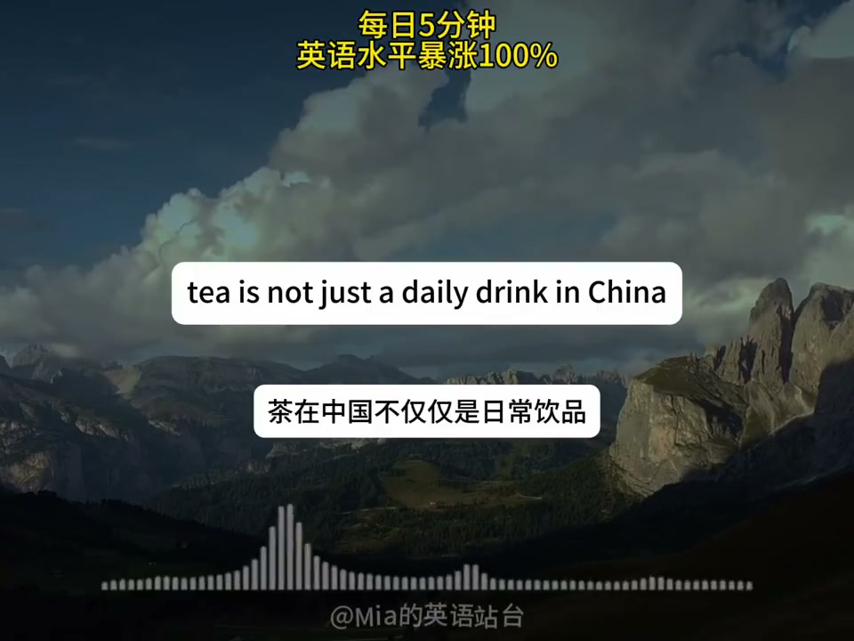
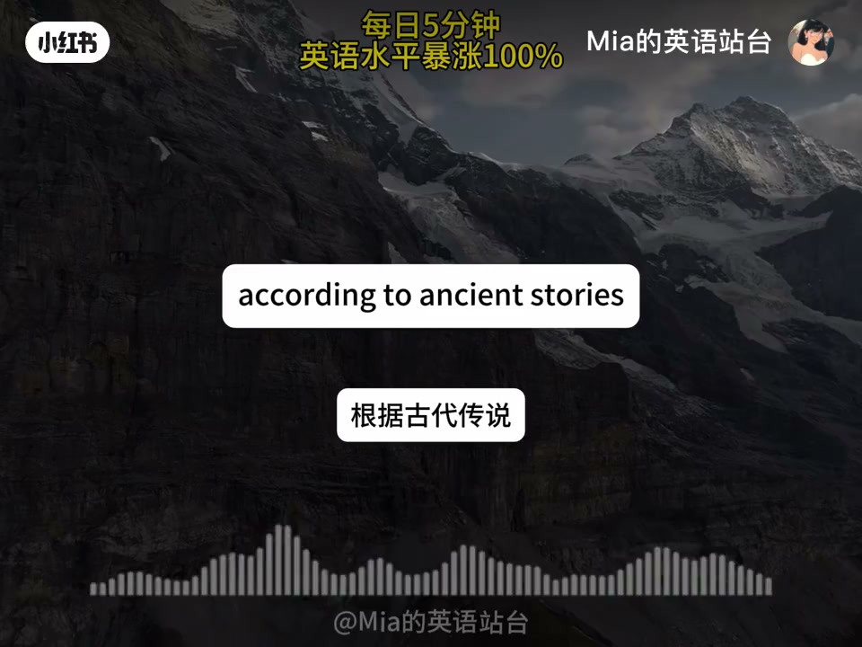
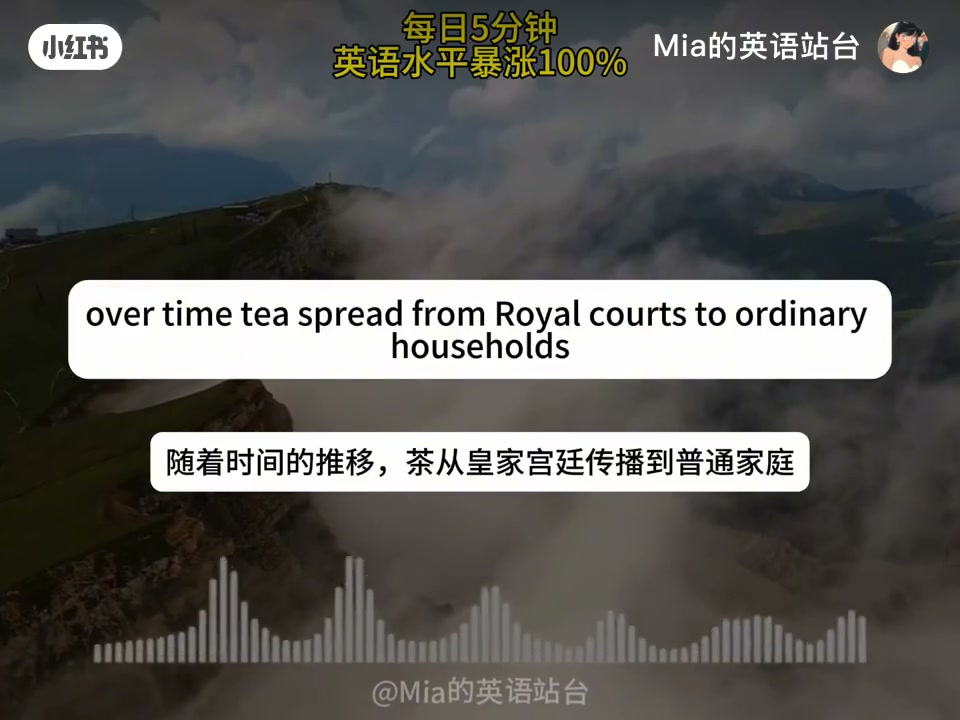
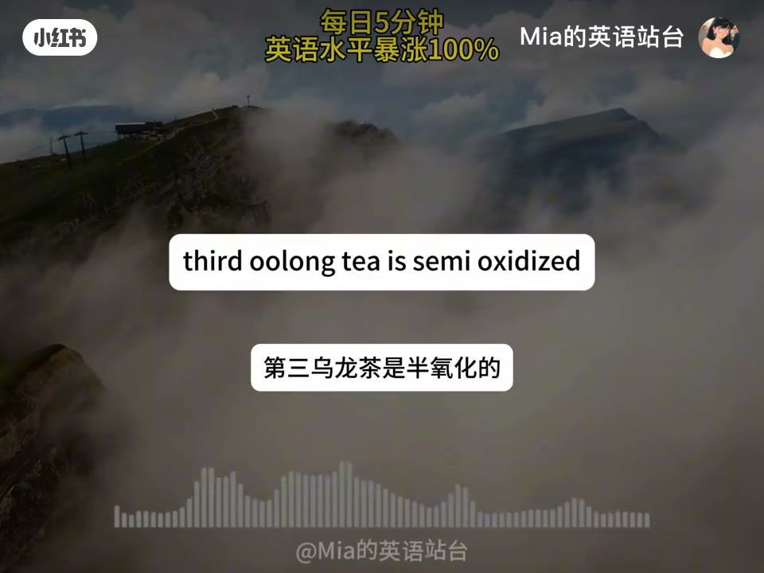
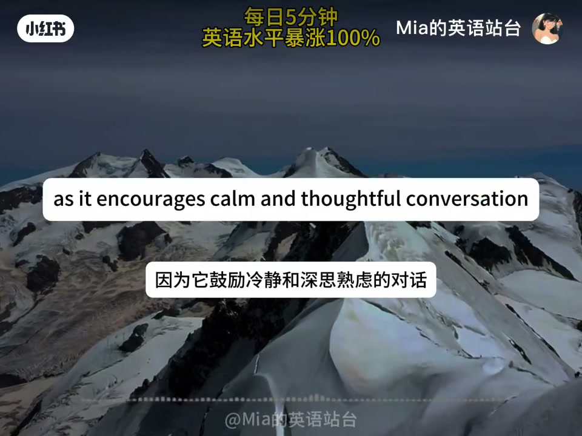
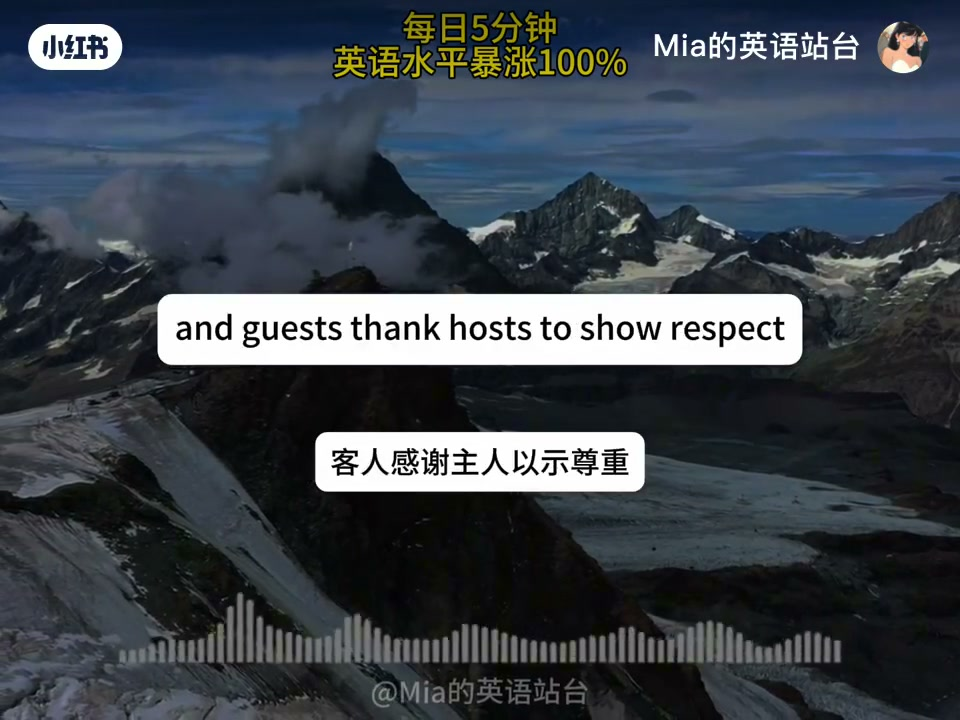
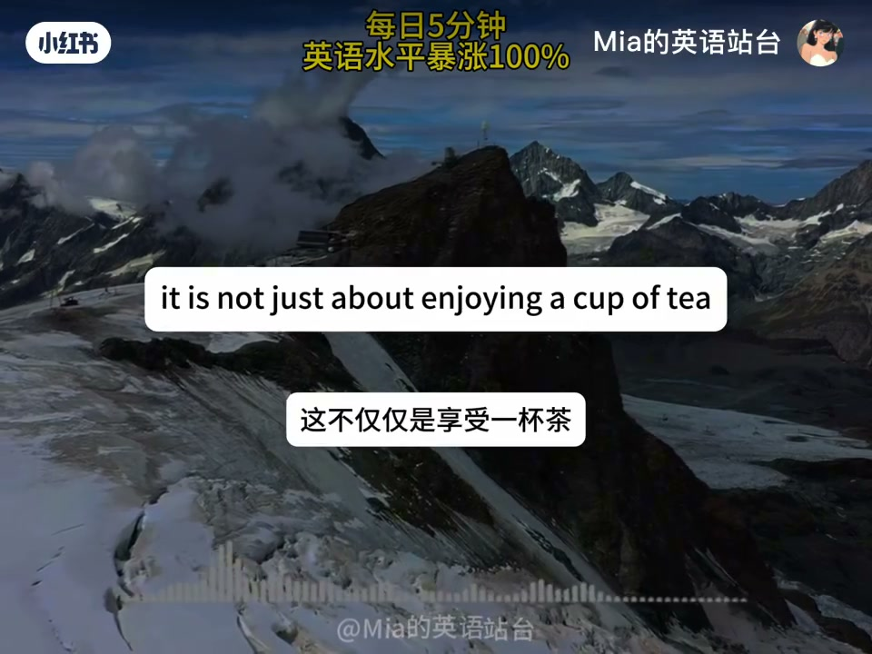

内容要点
账号「Mia的英语站台」标题为「每日英语｜如何建立你的“英语脑”」，成片主体是一段英语口播的中国茶文化说明文（约 3 分 35 秒）：四类茶、工夫茶礼仪、儒道与日常奉茶。建立「英语脑」的方法隐含在「持续听读有信息密度的英语内容」这一形式里，而不是另讲一套元方法。ASR 为英文，专名按常见译名校正（Lapsang Souchong、Tieguanyin/铁观音、Gong Fu tea 等）。
知识结构
茶=历史与生活方式；绿茶杀青保绿。
氧化程度光谱与代表名茶。
工夫茶、儒道、日常与总结。
用主题听力（茶文化）练理解；同时记下四类茶与工夫茶礼仪的内容点，一举两得。
00:00–01:20总起与绿茶
开场把茶定义为四千多年传承的生活方式符号，再进入四类茶。绿茶通过快速加热停止氧化，保留翠绿与草香，龙井是代表。


01:20–02:10红、乌龙、白
中国语境的「红茶」对应英文 black tea，全氧化，正山小种带烟熏；乌龙半氧化，铁观音经典；白茶加工最少、幼芽自然干、味道清淡。


02:10–03:35工夫茶、哲学与收束
工夫茶不止泡茶，更是尊重与连接；道家谈与自然平衡，儒家谈待客礼貌。日常做客奉茶，婚礼节日亦见。总结：喝茶也是理解一种重视简朴、连接与自然的生活方式。



完整转录
Today we will explore the rich and long standing tea culture of China.
Tea is not just a daily drink in China.
It is a symbol of history tradition and a way of life that has been passed down for more than 4000 years.
Next, let's look at the four main types of Chinese tea, each with distinct flavors and production methods.
The first is green tea, the most popular type in China.
It is made by quickly heating fresh tea leaves to stop oxidation, which keeps its bright green color and fresh grassy taste.
Longjing from Zhejiang province is one of the world's most famous green teas.
Second, black tea known as red tea in China goes through full oxidation, giving it a dark color and rich sweet flavor.
Lapsang Sochong from Fujian province is a well-known black tea with a unique smoky taste.
Third, oolong tea is semi-oxidized, sitting between green and black tea.
It has a fragrant aroma and smooth taste, with Tai Guan Yin from Fujian being a classic example.
Finally, white tea is the least processed.
It is made from young tea buds and leaves dried naturally, offering a light delicate flavor and often considered a high quality tea.
Tea is deeply woven into Chinese social and cultural life.
One important tradition is the Gong Fu tea ceremony, which started in Fujian and Guangdong provinces.
This ceremony is not just about making tea.
It is a way to show respect, connect with others, and appreciate small moments in life.
During the ceremony, the host uses small teapots and cups, following precise steps from warming the utensils to pouring tea evenly into each cup.
You can see this ceremony at family gatherings, friend meetings, and even business events, as it encourages calm and thoughtful conversation.
Tea also has links to Chinese philosophy.
In Taoism, tea is seen as a way to achieve balance with nature.
It comes directly from the earth and is prepared with simple natural methods.
In Confucianism, sharing tea is a way to show politeness and build relationships.
Hosts always make sure guests' cups are full, and guests thank hosts to show respect.
Even today, these ideas remain part of daily life.
You will often be offered a cup of tea when visiting someone's home, and tea is served at important occasions like weddings and festivals.
To sum up, Chinese tea culture is a mix of history, craftsmanship, and tradition.
It is not just about enjoying a cup of tea.
It is about understanding a lifestyle that values simplicity, connection, and respect for nature.
Whether you are drinking a cup of Longjing in a quiet garden or joining a Gong Fu tea ceremony with friends,
tea brings people together and keeps Chinese culture alive.